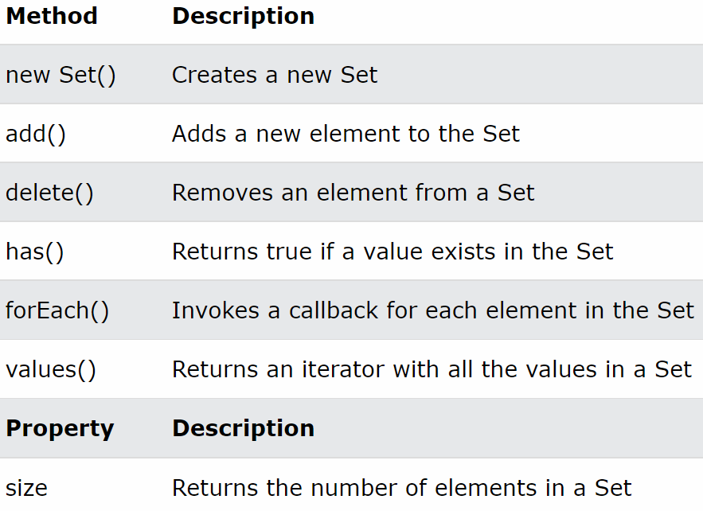

자바스크립트에 데이터 타입의 확장개념으로 집합데이터를 다룰 수 있는 객체를 만듦
-
set 안에 중복데이터는 허용하지 않음 : 단 중복검사 후 존재하는 데이터는 최초의 데이터만 저장함
-
Set : 객체로 개념화 후 자바스크립트 내부에 클래스를 먼저 정의하고 그 클래스를
코드로 인스턴스화 할 수 있게 만든 구현체
-
파라미터 : 배열을 주로 사용한다 : 배열의 인덱스와 값을 내부적으로 활용하여 집합데이터를
만든다고 생각하면 됨
-
배열과 비슷하지만 set의 전용 메서드들이 존재하기 때문에 별도로 학습을 해두어야 함

-
new Set() or new Set(배열) : Set 객체 생성 및 초기화
-
set => s : s.add(데이터) : 값 추가
-
s.delete(데이터) : 값 삭제
-
s.has(데이터) : 값 존재 여부
-
s.forEach(callback function()) : Set 순환
-
s.entries(), s.keys(), s.values(): Set의 키: 값, 키, 값을 추출 : 리턴 타입은
SetIterator : 별도의 메서드를 사용하여 SetIterator에 접근해야 함
-
s.size : Set이 갖고 있는 데이터의 개수
-
Set은 getter, setter을 제공하지 않으므로 forEach를 사용하여 개별값에 접근해야함